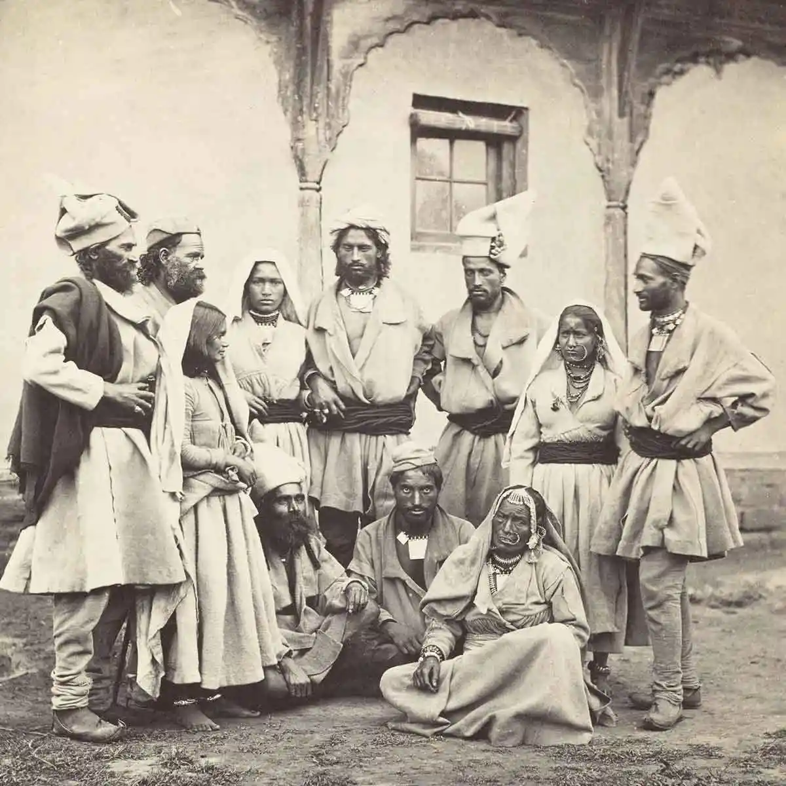
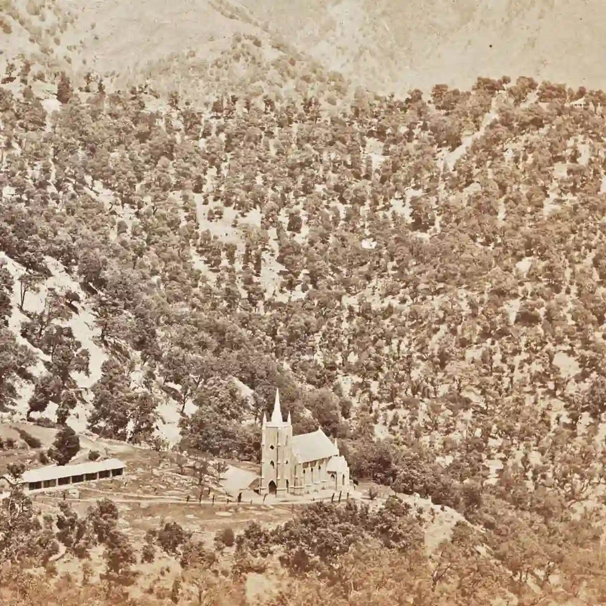
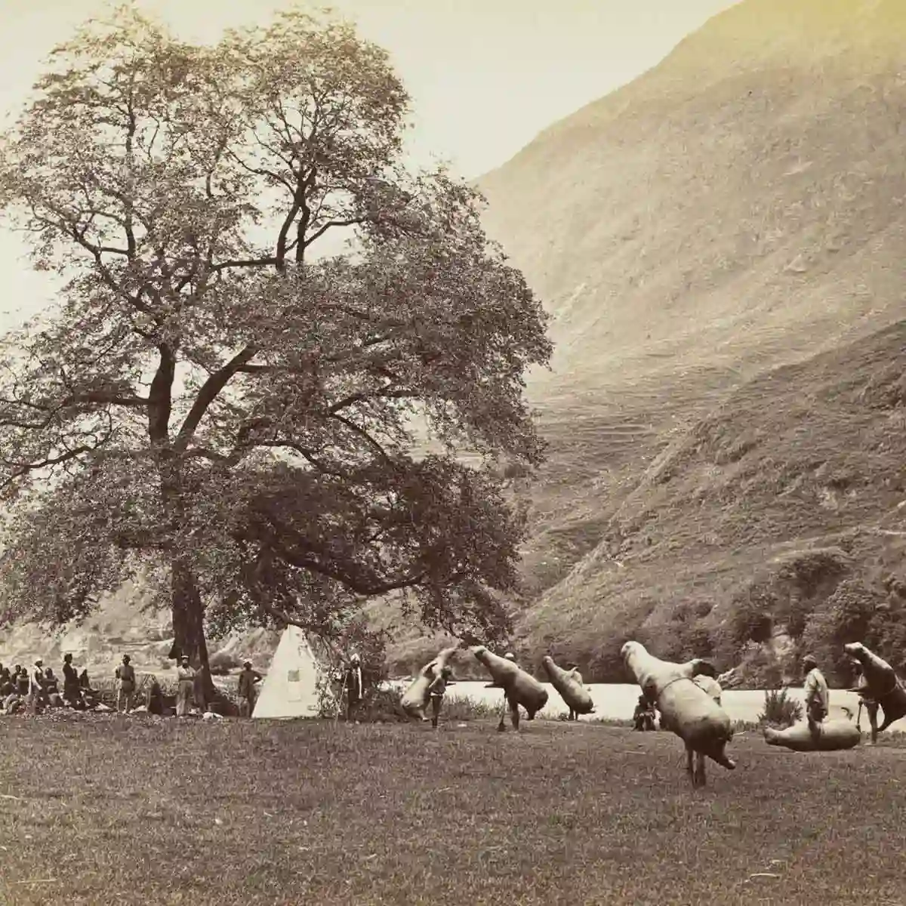
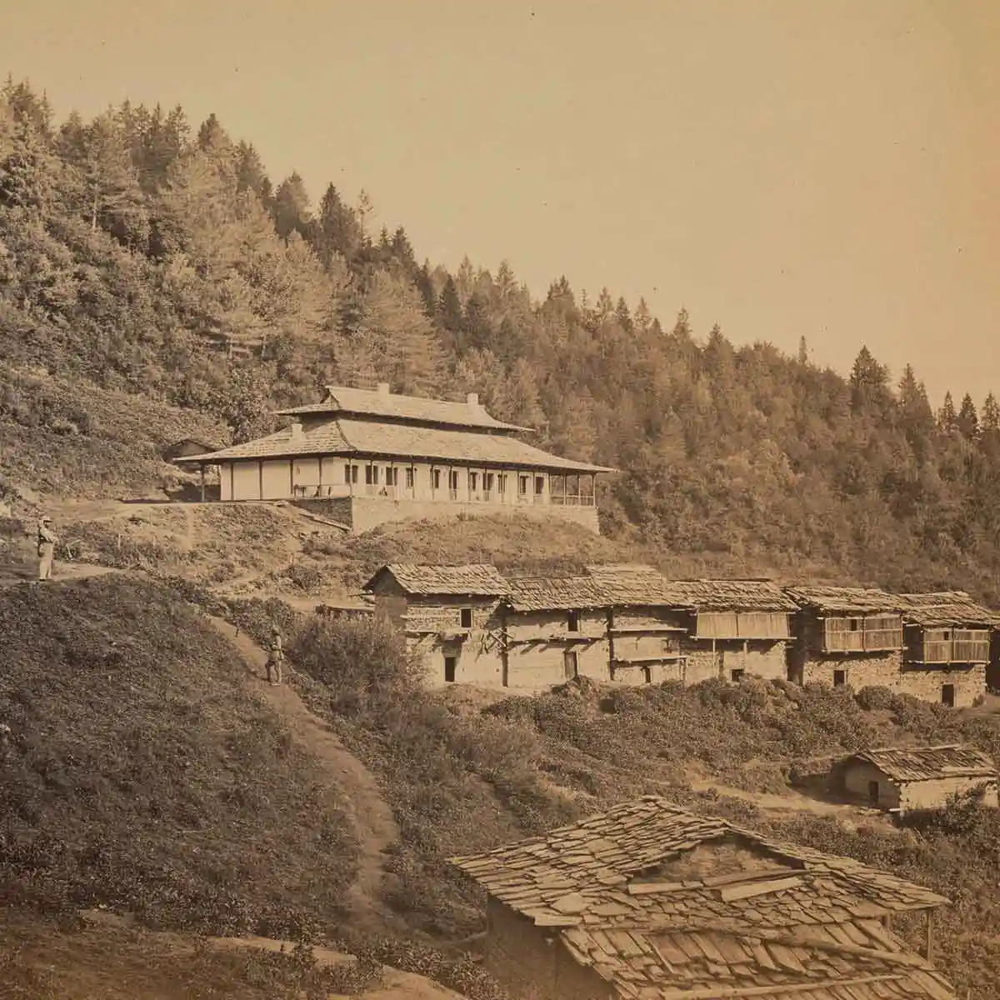
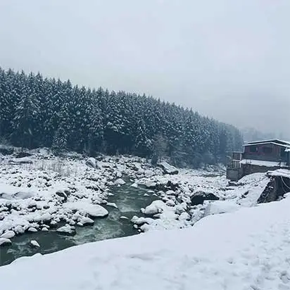
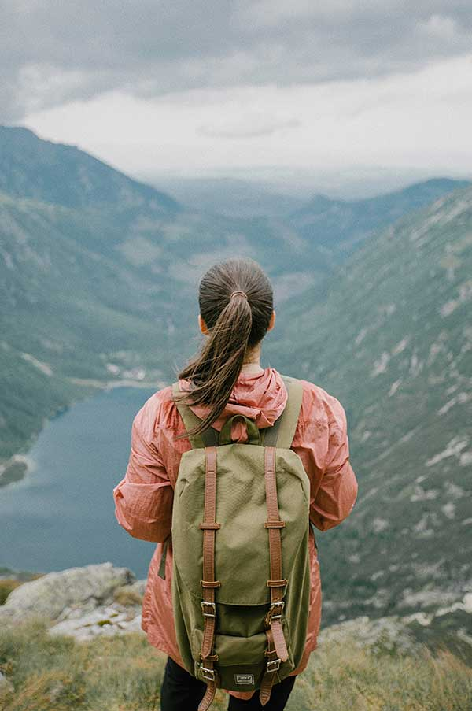
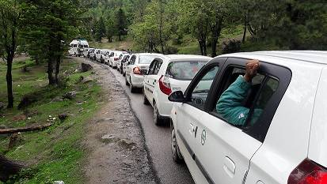
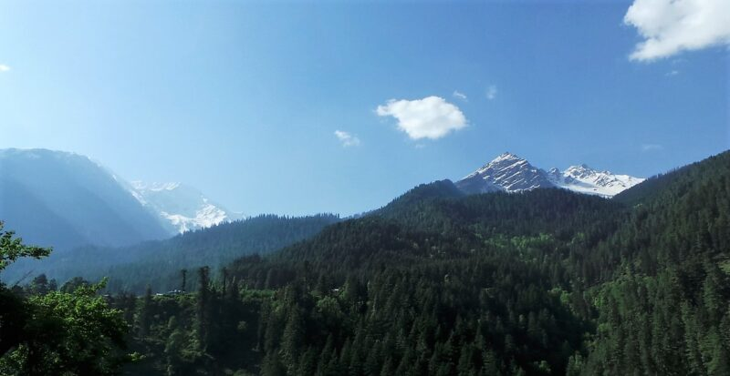

HISTORY
Rare Black & White
pictures that bring to
life Old Himachal
Pradesh

Ever wondered how Himachal Pradesh looked like in the old days?
Here is how it was like…
Discover more
Cooking Fats & Oil
Dairy&Eggs
travel
So, how was it like Himachal Pradesh, say 200 years ago?
Well, to begin with there was no place called Himachal
Pradesh at that time. That came much later. There were
just hill principalities with their own kings and queens.
Life was simple in the untouched mountains and verdant valleys.
The rivers were crystal clear and the air pristine. The people
went about their lives, working in the fields and celebrating in the fairs.
Then came the Gorkhas, the Sikhs and finally the Britishers.
The first ones to explore the hills were the Europeans, mainly the
Britishers, who by 1815 had made inroads into the mountains after first
defeating the Gorkhas and then the Sikhs in 1846.
These Western travellers and professional photographers like Samuel
Bourne used early old black and white cameras to capture moments that
are now frozen forever in time. They have left us a treasure trove,
a time machine that enables us to get a peek into the past.
Enough said. Let me turn the clock back and take you back in time
with some of these rare photographs of an unseen Himachal Pradesh.
St. John in the Wilderness Church,
Dharamshala

This is how the St John church of Dharamshala in Kangra looked
like
in the 1860s, around a decade after it was built in 1852. There is no
other structure barring this church in the entire hill.
Built in the neo-Gothic style of architecture, this Protestant
church had withstood the Kangra earthquake of 1905.
However, the church spire, which can be seen in this image,
was destroyed in the earthquake. St. John’s church
is also the resting place of Lord Elgin, the Viceroy and
Governor General of India. Lord Elgin had died in 1863
and was buried in the churchyard here. Chamba — A group of Gaddies
Chamba — A group of Gaddies
.webp)
Shot in 1864 by Samuel Bourne, this powerful image depicts
a group of shepherds from Chamba, in their traditional dress.
The Bharmour region of Chamba in Himachal Pradesh is home to the
semi-nomadic tribe of shepherds, known locally as Gaddis.
The Gaddis are known for their unique culture, language and
transhumance, the seasonal migration of livestock to warmer
pastures in winters and to higher-altitude pastures in .summers.
Mussucks for crossing the Beas

There was a time when there were hardly any bridges to cross the
rivers. What did the people do then? They used
mussucks — the inflated animal skins — to cross the
rivers.
This picture, taken in 1864, shows men carrying
mussucks on the bank of Beas river near Bajaura
in Kullu.
The ‘mussuck men’ used to be called ‘Tarus’ (‘swimmers’) in
local dialect. The Tarus used to charge a
nominal
amount from local people for crossing the Beas river
riding their mussucks in the Nagwain area
of Mandi. The
mussucks continued to ferry people in Nagwain till even
in the 1980s and slowly
disappeared by the initial
years of the 90s.
Dak bungalow, Narkanda

If you were to travel in the mountains of Himachal Pradesh in the
19th
century, where would you spend the night? In a tent or in a Dak bungalow,
only if the British gora sahibs allowed you. One such Dak bungalow above
the village houses of Narkanda near Shimla is in this image.
The Dak bungalows were established during the British rule on the postal
routes and acted as rest houses for government officials and European
travellers. Interesting fact: When there were no roads, apples, carried by
labourers and ‘mail men’ in baskets,used to be from
Kullu to Shimla using these postal routes.
You may also like


Tips & Guides | Places to Visit in Kullu Manali
travel 5 Reasons Why Should You Go To Mountains To Heal Yourself


Travel Tips & Guides 5 Reasons Why You Can Avoid Visiting Kullu-Manali In May-June
And get latest travel updates and our exclusive
offers, delivered straight to your inbox every week!
Your email address will not be published. Required fields are marked *
Home Page Shop Trekking Camping in Manali Adventure Blog Himalayan Wild Honey Himalayan Desi Cow Ghee from Kullu Manali About Us Contact Us Terms & Conditions Privacy Policy Return & Refund Policy Shipping Policy © 2026 Wildcone